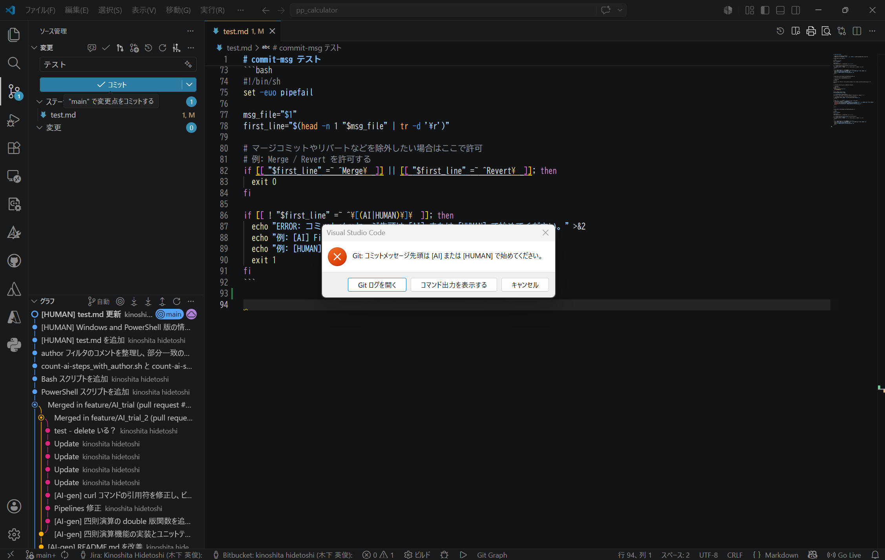

概要
AI が作成したコードのステップ数をカウントしたい、という要望をいただきました。いろいろ検討してみましたが下記のような感じで、コミット単位で扱う、ことで AI が作成したコードのステップ数を概ねカウントすることができそうです。
[評価環境１]
| Git : | 2.53.0 | |
| OS : | Ubuntu, | 24.04 (WSL) |
| ターミナル : | GNU bash, | version 5.2.21 |
[評価環境２]
| Git : | 2.53.0 | |
| OS : | Windows 11, | 24.04 (WSL) |
| ターミナル : | PowerShell, | 5.1.26100.7920 |
2つのコミット間の「コミット一覧」を出力する方法を記載します。
<commit1> の次のコミットから <commit2> までが対象となります。
コマンド： git log <commit1> .. <commit2> --oneline
具体例：
$ git log d8fc8494..HEAD --oneline dfbd4b2 (HEAD -> feature/AI_trial) [AI-gen] 四則演算機能の実装とユニットテストを追加 d3e9f3b [AI-gen] README.md を改善 26ac19e (origin/main, origin/HEAD, main) 修正 63e424d GitHub Copilot 提案を適用 21d7330 README.md 更新 2924810 typo 修正 ca6dc3e スペル誤り修正： calcurator > calculator 93836ac 環境変数名を変更、他 a79fe1f 整理 82fc67d 更新 f5305b5 表記形式を変更 6a5cb5e 更新 $
指定したコミット間の変更ステップ数をカウントする方法を記載します。
下記コマンドは、2つのコミット間で「何行追加され、何行削除され、何ファイルが変更されたか」を一行で要約して表示するコマンドです。
<commit1> の次のコミットから <commit2> までが対象となります。
コマンド： git diff --shortstat <commit1> <commit2>
具体例：
$ git diff --shortstat d8fc8494 d3e9f3bd 11 files changed, 166 insertions(+), 42 deletions(-) $
指定したコミット間の変更ステップ数をカウントする方法を記載します。
下記コマンドは、2つのコミット間で「何行追加され、何行削除され、何ファイルが変更されたか」を一行で要約して表示するコマンドです。
<commit1> の次のコミットから <commit2> までが対象となります。
コマンド (Linux shell)：
git diff --numstat <commit1> <commit2> | awk '{ files++; add+=$1; del+=$2 }
END { print "files:", files, "added:", add, "deleted:", del, "total:", add+del }'
具体例 (Linux shell)：
$ git diff --numstat dccfd079 d3e9f3bd | awk '{ files++; add+=$1; del+=$2 }
END { print "files:", files, "added:", add, "deleted:", del, "total:", add+del }'
files: 11 added: 167 deleted: 40 total: 207
$
コマンド (Windows PowerShell)：
$files=0;$add=0;$del=0;git diff --numstat <commit1> <commit2> | %{ $c =$_ -split "`t"; if($c.Count -eq 3 -and $c[0] -ne '-' -and $c[1] -ne '-'){ $files++; $add+=[int]$c[0]; $del+=[int]$c[1] } }; "files: $files added: $add deleted: $del total: $($add+$del)"
具体例 (Windows PowerShell)：
> $files=0;$add=0;$del=0;git diff --numstat dccfd079 d3e9f3bd | %{ $c =$_ -split "`t"; if($c.Count -eq 3 -and $c[0] -ne '-' -and $c[1] -ne '-'){ $files++; $add+=[int]$c[0]; $del+=[int]$c[1] } }; "files: $files added: $add deleted: $del total: $($add+$del)"
files: 11 added: 167 deleted: 40 total: 207
>
コミットタイトルのプレフィックスに [AI-gen] を含むコミットのみをカウント対象とする方法を記載します。
--grep="^\[AI-gen\]" 中の ^ が文字列先頭（プレフィックス）を指定する記号です。
コマンド (Linux shell)：
git log <commit1>..<commit2> --grep="^\[AI-gen\]" --pretty=format:"%H%n" | \
grep -v '^$' | \
while IFS= read -r hash; do
git diff --numstat ${hash}^ ${hash}
done | awk '{ files++; add+=$1; del+=$2 }
END { print "files:", files, "added:", add, "deleted:", del, "total:", add+del }'
具体例 (Linux shell)：
$ git log dccfd079..d3e9f3bd --grep="^\[AI-gen\]" --pretty=format:"%H%n" | \
grep -v '^$' | \
while IFS= read -r hash; do
git diff --numstat ${hash}^ ${hash}
done | awk '{ files++; add+=$1; del+=$2 }
END { print "files:", files, "added:", add, "deleted:", del, "total:", add+del }'
files: 1 added: 103 deleted: 12 total: 115
$
Bash シェルスクリプト： "count-ai-steps.sh"
#!/usr/bin/env bash
set -euo pipefail
from="dccfd079"
to="HEAD"
keyword="^\[AI-gen\]"
git log "${from}".."${to}" --grep="${keyword}" --pretty=format:"%H%n" | \
grep -v '^$' | \
while IFS= read -r hash; do
git diff --numstat "${hash}^" "${hash}"
done | awk '{ files++; add+=$1; del+=$2 }
END { print "files:", files, "added:", add, "deleted:", del, "total:", add+del }'
NOTE
grep -v '^$' | \ の処理を抜くと、最も古いコミット１つのカウントが無くなりました。このためこの処理が必要です。
コマンド (Windows PowerShell)：
$from='<commit1>';$to='<commit2>';$grep='^\[AI-gen\]';$hashes=git log "$from..$to" --grep="$grep" --pretty=format:"%H%n"|?{$_ -and $_.Trim() -ne ''};$files=0;$add=0;$del=0;foreach($hash in $hashes){git diff --numstat "$hash^" $hash|%{ $c=$_ -split "`t",3; if($c.Count -ge 2){$files++;$a=0;$d=0;[void][int]::TryParse($c[0],[ref]$a);[void][int]::TryParse($c[1],[ref]$d);$add+=$a;$del+=$d}}};"files: $files added: $add deleted: $del total: $($add+$del)"
具体例 (Windows PowerShell)：
> $from='dccfd079';$to='d3e9f3bd';$grep='^\[AI-gen\]';$hashes=git log "$from..$to" --grep="$grep" --pretty=format:"%H%n"|?{$_ -and $_.Trim() -ne ''};$files=0;$add=0;$del=0;foreach($hash in $hashes){git diff --numstat "$hash^" $hash|%{ $c=$_ -split "`t",3; if($c.Count -ge 2){$files++;$a=0;$d=0;[void][int]::TryParse($c[0],[ref]$a);[void][int]::TryParse($c[1],[ref]$d);$add+=$a;$del+=$d}}};"files: $files added: $add deleted: $del total: $($add+$del)"
files: 1 added: 103 deleted: 12 total: 115
>
PowerShell シェルスクリプト： "count-ai-steps.ps1"
$from='dccfd079'
$to='HEAD'
$keyword='^\[AI-gen\]'
$hashes=git log "$from..$to" --grep="$keyword" --pretty=format:"%H%n" | Where-Object {$_ -and $_.Trim() -ne ''}
$files=0; $add=0; $del=0
foreach ($hash in $hashes){
git diff --numstat "$hash^" $hash | ForEach-Object{
$c=$_ -split "`t",3
if ($c.Count -ge 2){
$files++
$a=0
$d=0
[void][int]::TryParse($c[0],[ref]$a)
[void][int]::TryParse($c[1],[ref]$d)
$add+=$a
$del+=$d
}
}
}
"files: $files added: $add deleted: $del total: $($add+$del)"
“コミットした人” を検索条件に追加可能です。
これにより 人毎のメトリクス集計 も可能となります。
詳細は下記サンプルを参照ください。
注意
author に記載するテキストは 正規表現 です。メールアドレス中に . を含む場合、 \. というようにエスケープが必要です。
Bash シェルスクリプト： "count-ai-steps_with_author.sh"
#!/usr/bin/env bash
set -euo pipefail
from="dccfd079"
to="HEAD"
keyword="^\[AI-gen\]"
author="^kinoshita hidetoshi <kinoshita\.hidetoshi@google\.com>$" # 完全一致
#author="kinoshita hidetoshi" # 部分一致
#author="kinoshita\.hidetoshi@google\.com" # 部分一致
git log "${from}".."${to}" --author="${author}" --grep="${keyword}" --pretty=format:"%H%n" | \
grep -v '^$' | \
while IFS= read -r hash; do
git diff --numstat "${hash}^" "${hash}"
done | awk '{ files++; add+=$1; del+=$2 }
END { print "files:", files, "added:", add, "deleted:", del, "total:", add+del }'
PowerShell シェルスクリプト： "count-ai-steps_with_author.ps1"
$from='dccfd079'
$to='HEAD'
$keyword='^\[AI-gen\]'
$author='^kinoshita hidetoshi <kinoshita\.hidetoshi@google\.com>$' # 完全一致
#$author='kinoshita hidetoshi' # 部分一致
#$author='kinoshita\.hidetoshi@google\.com' # 部分一致
$hashes=git log "$from..$to" --author="$author" --grep="$keyword" --pretty=format:"%H%n" | Where-Object {$_ -and $_.Trim() -ne ''}
$files=0; $add=0; $del=0
foreach ($hash in $hashes){
git diff --numstat "$hash^" $hash | ForEach-Object{
$c=$_ -split "`t",3
if ($c.Count -ge 2){
$files++
$a=0
$d=0
[void][int]::TryParse($c[0],[ref]$a)
[void][int]::TryParse($c[1],[ref]$d)
$add+=$a
$del+=$d
}
}
}
"files: $files added: $add deleted: $del total: $($add+$del)"
Git コミットタイトル先頭に [AI] [HUMAN] など固定キーワードを挿入するのって忘れてしまいそうですよね。"Git hooks" という仕組みを使用することで、メッセージ規約を強制することができます。
Git hooks とは：
Git hooks は、Git の特定イベントに合わせて自動実行されるスクリプトです。
例：
代表的な hooks 一覧（よく使うもの）：
| フック | タイミング | 主用途 |
|---|---|---|
| pre-commit | コミット作成の直前 | フォーマット、Lint, 秘密情報検査、差分検査 |
| commit-msg | コミットメッセージ確定前 | メッセージ規約（Jira キー、[AI] 等） |
| prepare-commit-msg | エディタ起動前 | メッセージ自動生成、テンプレート挿入 |
| pre-push | push 直前 | テスト、ブランチ名規約、禁止ブランチガード |
| post-checkout | checkout 後 | 依存更新、サブモジュール更新、生成物同期 |
| post-merge | merge 後 | 依存更新、サブモジュール更新、生成物同期 |
以下、commit-msg を使って git コミットメッセージ先頭に [AI] または [HUMAN] の記載を強制化する方法を記載します。
1. リポジトリの ".git/hooks/commit-msg" に以下のスクリプトを保存します。
#!/usr/bin/env bash set -euo pipefail msg_file="$1" first_line="$(head -n 1 "$msg_file" | tr -d '\r')" # マージコミットやリバートなどを除外したい場合はここで許可 # 例: Merge / Revert を許可する if [[ "$first_line" =~ ^Merge\ ]] || [[ "$first_line" =~ ^Revert\ ]]; then exit 0 fi if [[ ! "$first_line" =~ ^\[(AI|HUMAN)\]\ ]]; then echo "ERROR: コミットメッセージ先頭は [AI] または [HUMAN] で始めてください。" >&2 echo "例: [AI] Fix dewarp edge case" >&2 echo "例: [HUMAN] Refactor stitching pipeline" >&2 exit 1 fi
2.".git/hooks/commit-msg" に実行権限を付与します。
$ chmod +x ./git/hooks/commit-msg
以上で設定完了です。
1. リポジトリの ".git/hooks/commit-msg" に以下のスクリプトを保存します。文字コードを UTF-8 で保存します。
#!/bin/sh set -euo pipefail msg_file="$1" first_line="$(head -n 1 "$msg_file" | tr -d '\r')" # マージコミットやリバートなどを除外したい場合はここで許可 # 例: Merge / Revert を許可する if [[ "$first_line" =~ ^Merge\ ]] || [[ "$first_line" =~ ^Revert\ ]]; then exit 0 fi if [[ ! "$first_line" =~ ^\[(AI|HUMAN)\]\ ]]; then echo "ERROR: コミットメッセージ先頭は [AI] または [HUMAN] で始めてください。" >&2 echo "例: [AI] Fix dewarp edge case" >&2 echo "例: [HUMAN] Refactor stitching pipeline" >&2 exit 1 fi
以上で設定完了です。
ではコミット実行してみます。
コミットタイトルを「テスト」としてコミット操作すると、下図のような画面を表示しました。期待通りに動作していることを確認できました。

本ページの情報は、特記無い限り下記 MIT ライセンスで提供されます。
| 2026-05-15 | - | 「6. コミットタイトル先頭の文字列記載を強制する方法 - ".git/hookscommit-msg"」を追加 |
| 2026-04-21 | - | 新規作成 |